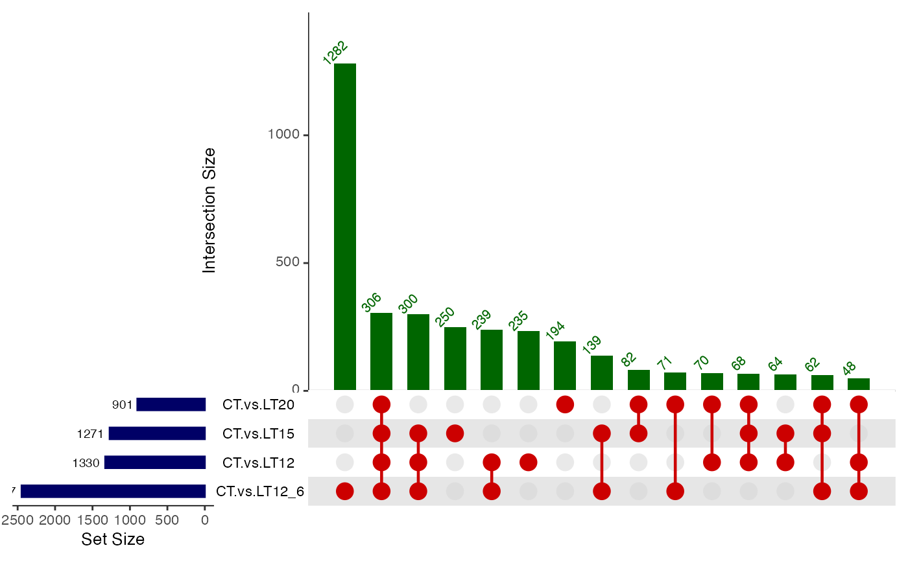
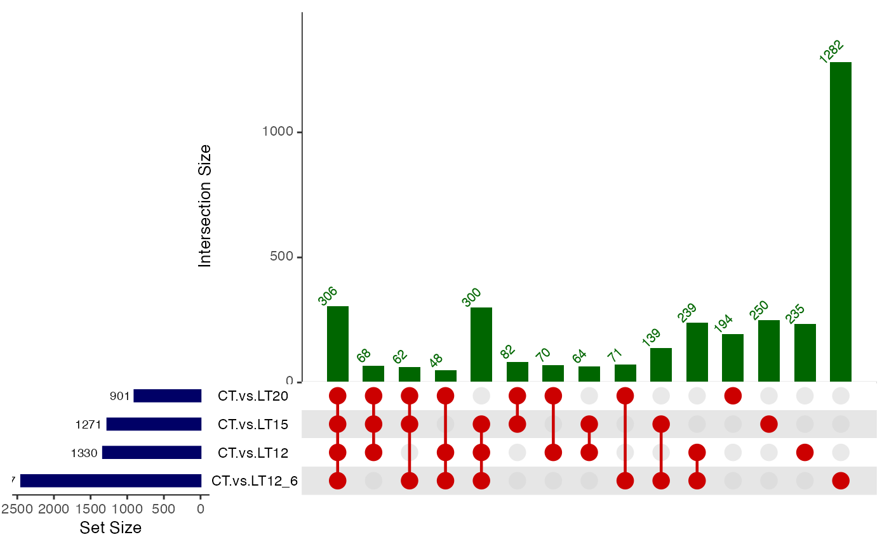
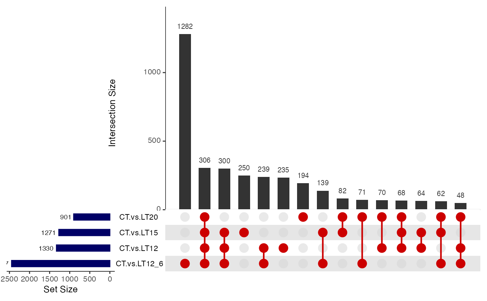
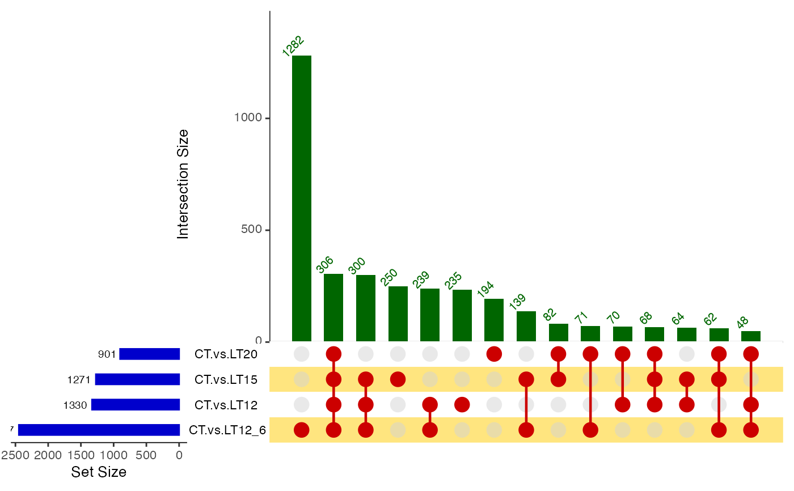

UpSet plot for stat common and unique gene among multiple sets.
Source:R/upsetr_plot.R
upsetr_plot.RdUpSet plot for stat common and unique gene among multiple sets.
Usage
upsetr_plot(
data,
sets_num = 4,
keep_order = FALSE,
order_by = "freq",
decrease = TRUE,
mainbar_color = "#006600",
number_angle = 45,
matrix_color = "#cc0000",
point_size = 4.5,
point_alpha = 0.5,
line_size = 0.8,
shade_color = "#cdcdcd",
shade_alpha = 0.5,
setsbar_color = "#000066",
setsnum_size = 6,
text_scale = 1.2
)Arguments
- data
Dataframe: Paired comparisons differentially expressed genes (degs) among groups (1st-col~: degs of paired comparisons).
- sets_num
Numeric: sets number. Default: 4, min: 2, max: NULL.
- keep_order
Logical: keep sets in the order entered using the sets parameter. Default: FALSE, options: TRUE, FALSE.
- order_by
Character: intersections in the matrix should be ordered by. Default: "freq" (frequency), options: "freq", "degree", "both".
- decrease
Logical: order by decrease. Default: TRUE, options: TRUE, FALSE.
- mainbar_color
Charactor: mainbar color (color name or hex value). Default: "#006600".
- number_angle
Numeric: number display angle. Default: 45, min: 0, max: 360.
- matrix_color
Charactor: matrix point color (color name or hex value). Default: "#cc0000".
- point_size
Numeric: point size. Default: 4.5, min: 0.0, max: NULL.
- point_alpha
Numeric: point color alpha. Default: 0.50, min: 0.00, max: 1.00.
- line_size
Numeric: connection line size. Default: 0.8, min: 0.00, max: NULL.
- shade_color
Character: matrix shade color. Default: "#cdcdcd".
- shade_alpha
Numeric: shade color alpha. Default: 0.50, min: 0.00, max: 1.00.
- setsbar_color
Character: sets bar color. Default: "#000066".
- setsnum_size
Numeric: sets bar number size. Default: 6.
- text_scale
Numeric: all text scale. Default: 1.2, min: 0.01, max: NULL.
Examples
# 1. Library TOmicsVis package
library(TOmicsVis)
# 2. Use example dataset
data(degs_lists)
head(degs_lists)
#> CT.vs.LT20 CT.vs.LT15 CT.vs.LT12 CT.vs.LT12_6
#> 1 transcript_9024 transcript_4738 transcript_9956 transcript_10354
#> 2 transcript_604 transcript_6050 transcript_7601 transcript_2959
#> 3 transcript_3912 transcript_1039 transcript_5960 transcript_5919
#> 4 transcript_8676 transcript_1344 transcript_3240 transcript_2395
#> 5 transcript_8832 transcript_3069 transcript_10224 transcript_9881
#> 6 transcript_74 transcript_9809 transcript_3151 transcript_8836
# 3. Default parameters
upsetr_plot(degs_lists)
#> Warning: The `size` argument of `element_line()` is deprecated as of ggplot2 3.4.0.
#> ℹ Please use the `linewidth` argument instead.
#> ℹ The deprecated feature was likely used in the UpSetR package.
#> Please report the issue to the authors.

# 4. Set keep_order = TRUE, order_by = "degree"
upsetr_plot(degs_lists, keep_order = TRUE, order_by = "degree")

# 5. Set mainbar_color = "#333333", number_angle = 0
upsetr_plot(degs_lists, mainbar_color = "#333333", number_angle = 0)

# 6. Set shade_color = "#ffcc00", setsbar_color = "#0000cc"
upsetr_plot(degs_lists, shade_color = "#ffcc00", setsbar_color = "#0000cc")
